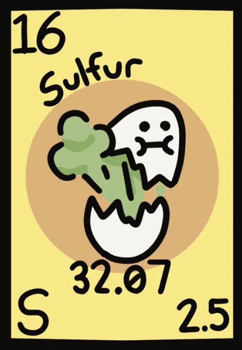

Atomic Number : 16
Atomic Mass : 32.06
Proton Number : 16
Neutron Number : 16
Category : Non - Metal
Sulfur has been known since ancient times and was used by civilizations such as the Greeks, Romans, and Chinese. Ancient people used sulfur in medicines, fumigation, and religious ceremonies. In 1777, French scientist Antoine Lavoisier proved that sulfur was an element rather than a compound. Since then, sulfur has become an important element used in industry, agriculture, and chemical production.
State at room temperature: Solid Colour: Bright yellow Odour: Odourless (pure sulfur) Taste: Tasteless Density: 2.07 g/cm³ Melting point: 115.21°C Boiling point: 444.72°C Solubility: Insoluble in water Molecular form: Usually exists as S₈ molecules
Sulfur is a reactive non-metal that can form compounds with many elements. It reacts with oxygen when burned to produce sulfur dioxide: S + O₂ → SO₂ Sulfur reacts with metals to form metal sulfides. It can react with hydrogen to form hydrogen sulfide (H₂S). Sulfur has several allotropes, including rhombic sulfur and monoclinic sulfur. It is a poor conductor of electricity.
Sulfur is found naturally in volcanic areas and near hot springs. It is also found in minerals such as sulfides and sulfates. Sulfur exists in crude oil, natural gas, and coal. It is present in living organisms and is an important part of some proteins.
Sulfur is mainly used to produce sulfuric acid, which is one of the most important industrial chemicals. It is used in making fertilizers to help plants grow. Sulfur is used in rubber production to make rubber stronger through vulcanization. It is also used in medicines, pesticides, and matches. Sulfur compounds are used in producing batteries and many chemical products.


Sulfur is known as "brimstone" and has been used since ancient times. Sulfur is responsible for the smell of rotten eggs when it forms hydrogen sulfide gas. Sulfur is the tenth most abundant element in the universe. It is found in volcanic eruptions and gives volcanoes their yellow deposits. Sulfur is essential for life because it is part of proteins in living organisms. Sulfur is a non-metal that burns with a blue flame.